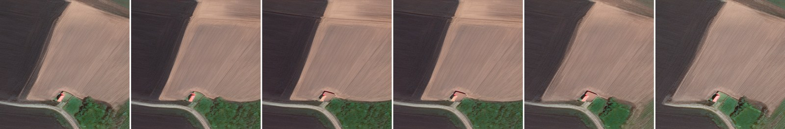
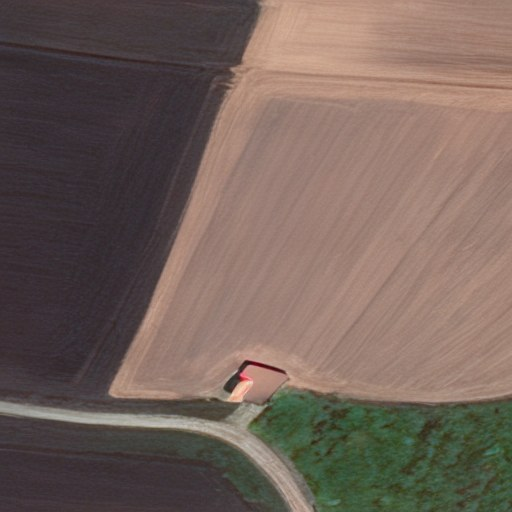
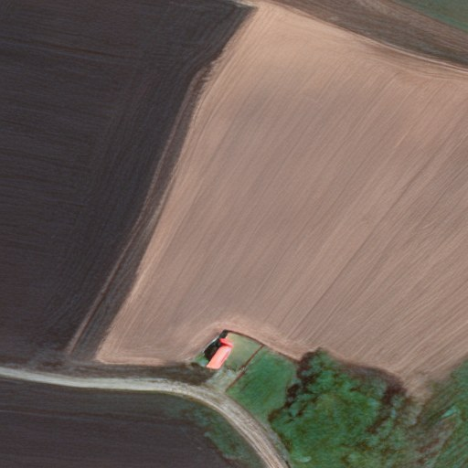
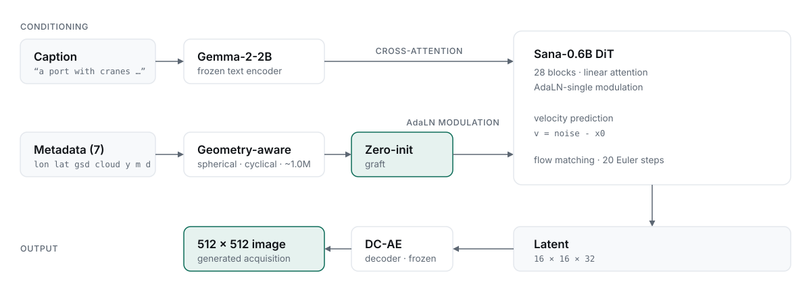

Flow-Matching Diffusion Transformers with Metadata Conditioning for Satellite Image Generation
Digvijay Singh Parihar · Rishabh · Nipun Batra · Shanmuganathan Raman
Sustainability Lab, Indian Institute of Technology Gandhinagar

Interactive
Every image below was generated from the same caption and the same noise seed. Only one metadata field changes. Drag a slider to see what that field controls.
static/sweeps/Comparison
Drag the divider. Both sides share a caption and a seed; only the metadata differs.


January JulyMethod
Satellite imagery is defined as much by how it was captured as by what it contains. Captions rarely state the season, the sensor resolution or the atmosphere — yet those are exactly what a user wants to control.
FlowSat conditions on seven acquisition fields alongside text. Rather than folding them into one undifferentiated vector, each is encoded according to its geometry: coordinates are lifted onto the sphere, periodic fields are encoded cyclically, and scalars on their natural scale. The embedding enters through a zero-initialised AdaLN graft, so the model begins identical to its text-to-image initialisation and learns metadata influence rather than having it imposed.

Spherical lift for coordinates, cyclical encoding for dates, natural scaling for GSD and cloud — ~1.0M parameters, an order of magnitude smaller than a naive per-field MLP and measurably better.
Metadata enters through a zero-init projection: byte-identical to the text-to-image initialisation at step 0, so the pretrained prior is never perturbed.
Velocity prediction on a natively flow-matched backbone — quality samples in ~20 Euler steps instead of 100 denoising steps.
Sana-0.6B with linear attention and DC-AE 32× latents (16×16×32 at 512 px), with a Gemma-2-2B text encoder.
Results
Identical FID reference statistics and sample set across all models.
| Model | FID ↓ | CLIP ↑ | Steps |
|---|---|---|---|
| DiffusionSat (ICLR 2024) | 35.27 | 0.1720 | 100 |
| GeoDiT-2Σ | 32.11 | — | — |
| FlowSat (ours) | 31.10 | 0.3016 | 20 |
Three-seed variance: FID 31.53 ± 0.32, CLIP 0.3018 ± 0.0007. The step-count advantage derives from flow matching and the DC-AE/Sana backbone rather than from metadata conditioning; the encoder's own contribution is isolated in the ablation.
Get started
git clone https://github.com/sustainability-lab/flowsat-satellite-image.git
cd flowsat-satellite-image && pip install -e .
python generate.py --prompt "An airport with a long grey runway."Metadata is optional — sensible defaults are built in. When you want control, every field is a flag:
python generate.py \
--prompt "A farmland with irrigated green fields." \
--lat 45.0 --lon 5.0 --month 7 --gsd 0.5Runs on GPU if one is available, CPU otherwise.
FlowSat is not tied to FMoW. Any corpus supplying (image, caption, metadata) triples plugs in through a single adapter class returning three keys:
{
"pixel_values": (3, H, W) # float, normalised to [-1, 1]
"input_ids": (L,) # tokenised caption
"metadata": (7,) # lon, lat, gsd, cloud, year, month, day
}Citation
@inproceedings{parihar2026flowsat,
title = {FlowSat: Flow-Matching Diffusion Transformers with Metadata
Conditioning for Satellite Image Generation},
author = {Parihar, Digvijay Singh and Rishabh and Batra, Nipun and
Raman, Shanmuganathan},
booktitle = {British Machine Vision Conference (BMVC)},
year = {2026}
}